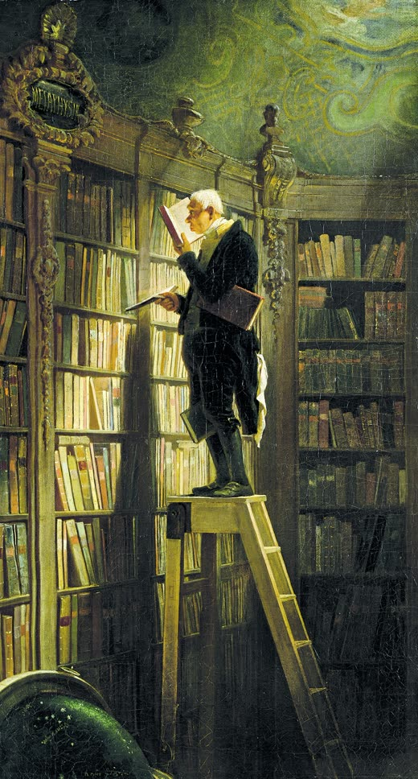
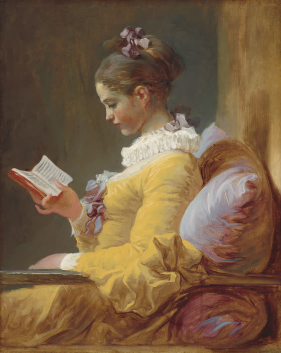
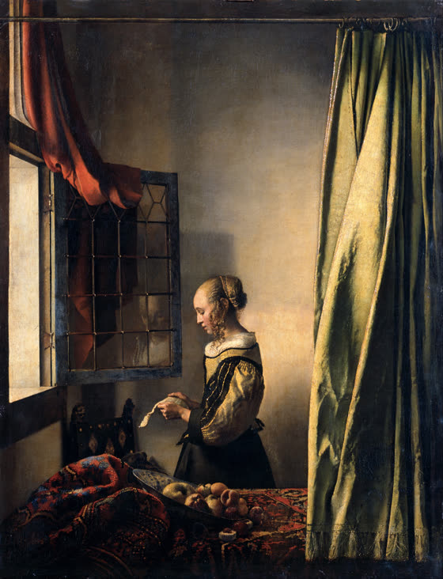

Scholia
Free annotated editions of the classics
Classic books are free to read, but full of words, places, and references that modern readers don’t know. Scholia sets a short note in the margin wherever you are likely to stop, so you can keep reading instead of searching.
The Library
Notes open under CC BY 4.0 · More books in preparation

How the notes work
Four kinds.Notes come in four layers, each with its own printer’s mark in the margin: * vocabulary, † allusions, § history, ¶ places. Turn any layer off; a confident reader might hide vocabulary.
Beside the text.Hover over an underlined phrase and its note appears in the margin beside it; click to keep it there with its source. Move the pointer into either margin to see every note on that side. On a phone, tap a phrase and the note opens below the paragraph.
Checked.Notes are drafted with AI, then checked by a person against the source each one cites. A missing note is better than a wrong one.
Open.Every note is released under CC BY 4.0. Teachers, students, and other projects may copy and reuse them with credit.

Help check the notes
Every note should be checked by a person before it can be trusted. Pick a chapter, check each note against a reliable source, then fix it, cut it, or mark it verified and open a pull request on GitHub.
The name comes from the scholia that readers once wrote in the margins of Greek and Latin manuscripts to explain hard words and references.